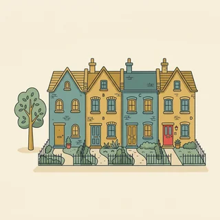

deutschoderwas · Sprechclub · Woche 8 · Strang C · Teil 1 · Montag, 2. November
Weniger Auto — und dann? Bus, Rad, Parkplatz, Land gegen Stadt
In Berlin-Mitte braucht kaum jemand ein Auto. In einem Dorf im Sauerland ist es die einzige Verbindung zur Welt. Genau deshalb reden Menschen bei diesem Thema so oft aneinander vorbei: Sie meinen dasselbe Wort, aber ein völlig anderes Leben. Heute sammeln wir die Wörter und die Zahlen — am Mittwoch wird daraus eine Debatte.
Gleiches Thema, andere Sätze. Wechsle jederzeit — probier ruhig beide Seiten aus.
Erst mal ankommen
Zwei Runden. Erst reihum, dann zu zweit. Ein Satz genügt.
Runde 1 · reihum, ein Satz pro Person
Wie kommst du normalerweise zur Arbeit oder zum Kurs?
Hast du ein Auto? Und brauchst du es wirklich?
Wie lange brauchst du zur nächsten Haltestelle?
Was wäre für dich der größte Unterschied ohne Auto?
Ist ein Auto bei dir Freiheit oder eher eine Last?
Wie war das in dem Land, in dem du aufgewachsen bist?
🔑 Damit das Gespräch trägt: Sag immer dazu, wo du wohnst. Der Satz Ich brauche kein Auto bedeutet in Köln etwas völlig anderes als in einem Dorf mit 400 Einwohnern — und ohne diese Angabe reden alle aneinander vorbei.
Runde 2 · zu zweit, fragt euch gegenseitig
Was kostet ein Auto bei dir im Monat ungefähr?
Fährst du lieber Bus oder Rad?
Gibt es bei dir einen guten Radweg?
Was müsste sich ändern, damit du das Auto stehen lässt?
Ist es gerecht, Parkplätze in der Stadt teurer zu machen?
Wer trägt die Kosten, wenn ein Dorf keinen Bus mehr hat?
💡 Zahlen für Mittwoch: Ein privates Auto steht im Schnitt über 23 Stunden am Tag ungenutzt. Eine gute Zahl für die Debatte — aber sag dazu, dass sie einen Durchschnitt beschreibt und nicht deinen Nachbarn.
🆘 Wie fange ich an?
Bei mir war das so: …Ich habe einmal …Ich glaube, das ist …
Bei mir war das so: …Ehrlich gesagt habe ich das noch nie …Mir fällt spontan ein Fall ein, in dem …
Vier Situationen — zwei Runden
1Runde 1: Lest den Dialog zu zweit laut.
2Runde 2: Klappt die Zeilen zu und sprecht frei — nur die Stichwörter bleiben.
Dialog 1 · „An der Ampel“
Zwei Kolleginnen treffen sich morgens auf dem Weg. Die eine mit dem Rad, die andere aus dem Bus — und beide rechnen kurz nach.
A
Du fährst wirklich jeden Tag mit dem Rad? Auch im November?
B
Ja, es sind nur vier Kilometer. Mit dem Rad brauche ich sieben Minuten, mit dem Auto zwölf.
🗣️ Ein Vergleich mit zwei Zahlen. Mit dem Rad und mit dem Auto — das Verkehrsmittel steht immer mit mit und Dativ.tippen = Hilfe zeigen
A
Zwölf? Das kann doch nicht sein, das sind vier Kilometer.
B
Fahren dauert fünf. Die anderen sieben sind Parkplatzsuche.
🗣️ Der Satz, der die Diskussion entscheidet. Wer die versteckte Zeit mitrechnet, argumentiert genauer als der, der nur die Fahrzeit nennt.tippen = Hilfe zeigen
A
Stimmt, das rechne ich nie mit.
B
Bei Regen nehme ich trotzdem den Bus. Ich bin nicht besonders tapfer.
🗣️ Eine kleine Einschränkung am Ende. Sie macht die ganze Rechnung glaubwürdiger — und den Sprecher sympathischer.tippen = Hilfe zeigen
Dialog 2 · „In der Werkstatt“
Die Rechnung ist höher als gedacht. A rechnet vor, was das Auto im Jahr wirklich kostet — B beginnt zu überlegen.
A
Bremsen und Inspektion, das macht zusammen 640 Euro.
B
Puh. Mit Versicherung und Steuer bin ich damit bei über dreitausend im Jahr.
🗣️ Zahlen zusammenrechnen statt einzeln nennen. bei über dreitausend — im Deutschen sagt man den Betrag, die Währung ist klar.tippen = Hilfe zeigen
A
Wie viel fahren Sie denn im Jahr?
B
Ungefähr 6000 Kilometer. Das ist deutlich weniger als früher.
🗣️ deutlich weniger als — Komparativ mit als. Und deutlich ist das Wort, mit dem man einen Unterschied verstärkt.tippen = Hilfe zeigen
A
Dann rechnet sich das kaum noch. Ein Carsharing-Wagen steht bei Ihnen um die Ecke.
B
Darüber denke ich seit einem Jahr nach. Solange ich zur Schicht fahre, geht es aber nicht.
🗣️ Zugeben und trotzdem eine Bedingung nennen. Solange … ist der ehrlichste Weg, eine Entscheidung offen zu lassen.tippen = Hilfe zeigen

Dialog 3 · „Die neue Sperrung“
Die Straße vor dem Haus ist seit einem Monat für Autos gesperrt. Zwei Nachbarn sehen das unterschiedlich — und bleiben trotzdem freundlich.
A
Seit der Sperrung parke ich zweihundert Meter weiter weg. Das nervt schon.
B
Das kann ich verstehen. Für mich ist es dafür abends viel ruhiger geworden.
🗣️ Erst zustimmen, dann die eigene Sicht. dafür stellt die beiden Seiten nebeneinander, ohne zu widersprechen.tippen = Hilfe zeigen
A
Für Sie im ersten Stock vielleicht. Ich muss den Einkauf schleppen.
B
Stimmt, das ist ein echter Nachteil. Wäre eine Ladezone vor dem Haus eine Lösung?
🗣️ Den Einwand als berechtigt anerkennen und sofort einen Vorschlag anbieten. So bleibt aus der Beschwerde ein Gespräch.tippen = Hilfe zeigen
A
Das wäre schon mal etwas. Zehn Minuten halten dürfen, mehr brauche ich nicht.
B
Dann bringen wir das bei der nächsten Versammlung zur Sprache.
🗣️ zur Sprache bringen — die feste Wendung aus Strang B passt hier genau. Ein Vorschlag mit einem Ort, an dem er hingehört.tippen = Hilfe zeigen
Dialog 4 · „Stadt gegen Land“
A wohnt in der Stadt, B im Dorf. Beide erzählen, wie ihr Alltag ohne Auto aussehen würde — und merken, wie verschieden das ist.
A
Ich habe mein Auto vor zwei Jahren abgeschafft und vermisse es kaum.
B
Das glaube ich dir sofort — in der Stadt. Bei uns fährt der Bus dreimal am Tag, morgens, mittags, abends.
🗣️ Zustimmen, aber die Bedingung dazusagen. Bei uns ist das wichtigste Wort im ganzen Dialog.tippen = Hilfe zeigen
A
Dreimal? Das wusste ich nicht.
B
Und der letzte fährt um 18:40. Wer länger arbeitet, kommt nicht mehr nach Hause.
🗣️ Eine konkrete Uhrzeit sagt mehr als jedes Adjektiv. Zahlen sind in Debatten immer stärker als Wörter wie schlecht.tippen = Hilfe zeigen
A
Dann ist das Auto bei euch gar keine Bequemlichkeit.
B
Genau. Deshalb reagieren viele auf dem Land so gereizt, wenn in der Stadt über Parkgebühren geredet wird.
🗣️ Die Erklärung für den ganzen Streit in einem Satz. Wer die andere Seite erklären kann, gewinnt am Mittwoch die Debatte.tippen = Hilfe zeigen
🎭 Und jetzt ihr: Spielt Dialog 4 mit euren echten Wohnorten. Regel: In jeder Antwort muss ein Vergleich mit als oder so … wie vorkommen — und mindestens eine Zahl.
Sätze, die sitzen müssen
Sag jeden einmal laut.
1 · ⚖️ Vergleichen
Mit dem Rad bin ich schneller.
Der Bus ist billiger als das Auto.
Zu Fuß dauert es genauso lange.
Das Auto ist bequemer.
2 · 🔒 Einschränken
Bei mir ist das so.
In der Stadt jedenfalls.
Wenn es nicht regnet.
Ohne Einkauf schon.
3 · 🔢 Zahlen nennen
Das dauert zwölf Minuten.
Das kostet 49 Euro im Monat.
Es sind zehn Kilometer.
Der Bus fährt dreimal am Tag.
4 · 🔀 Bedingung setzen
Wenn es einen Radweg gäbe, …
Solange der Bus so selten fährt, …
Ohne Auto könnte ich nicht arbeiten.
Mit besseren Verbindungen gern.
1 · ⚖️ Genau vergleichen
Im Vergleich zum Auto ist das Rad …
Doppelt so lange wie mit dem Auto.
Deutlich günstiger als …
Nicht ganz so schnell, dafür aber …
2 · 🔒 Präzise einschränken
Das gilt für die Innenstadt, nicht für den Kreis.
Unter der Woche jedenfalls.
Sobald Kinder dabei sind, kippt die Rechnung.
Für meine Strecke stimmt das, allgemein nicht.
3 · 🔢 Zahlen einordnen
Im Schnitt sind das …
Das entspricht ungefähr …
Auf das Jahr gerechnet …
Die Zahl stammt von …
4 · 🔀 Bedingungen formulieren
Vorausgesetzt, es gibt eine Alternative.
Sobald der Takt stimmt, …
Ohne verlässlichen Bus wird das nichts.
Unter diesen Bedingungen wäre ich dabei.
✅ Und jetzt zu zweit: Deckt die Sätze zu. Einer nennt den Schritt, der andere sagt den Satz aus dem Kopf. Danach tauschen.
⏱️ Die 90-Sekunden-Challenge
Neunzig Sekunden: Beschreib deinen Weg zur Arbeit oder zum Kurs und vergleich zwei Möglichkeiten — mit Zahlen, mit einer Einschränkung und mit einem Superlativ.
Dein Wort
der Parkplatz
1:30
Vier Sätze, dann trägt dich die Zeit:
Die Strecke:Ich fahre jeden Tag sechs Kilometer in die Innenstadt.
Der Vergleich:Mit dem Rad bin ich schneller als mit dem Auto.
Die Einschränkung:Bei Regen und mit Einkauf sieht das anders aus.
Der Superlativ:Am günstigsten ist eindeutig das Rad.
Und wenn dir die Form fehlt, hilft ein Umweg, den alle benutzen: statt am bequemsten einfach am bequemsten ist für mich … — oder ganz schlicht: Am liebsten fahre ich …
⏱️ Spielregel: In jeder Runde müssen ein Vergleich mit als, ein Vergleich mit wie und eine Zahl vorkommen. Wer größer wie sagt, fängt noch einmal an.
🎭 Drei Situationen zu zweit
1Einer rechnet vor, einer hält dagegen.
2Danach tauschen, beim zweiten Mal ohne die Sätze unten.
!Regel: In jeder Runde mindestens zwei Vergleiche und eine Zahl.
1Das zweite Auto
Die LageIn der Familie steht die Frage, ob das zweite Auto weg kann. A hat nachgerechnet, B hat Bedenken — vor allem wegen der Kinder.
Sätze, die dir helfen
Das zweite Auto kostet uns 250 Euro im MonatMit dem Rad bin ich morgens schnellerEin Monatsticket ist billiger als die VersicherungWir könnten es drei Monate probieren
Auf das Jahr gerechnet sind das über dreitausend EuroSobald die Kinder zum Sport müssen, wird es allerdings engMit Carsharing wäre es fast genauso flexibel wie mit dem eigenen WagenIch würde es befristet probieren und danach neu entscheiden
🎯 Geschafft, wennBeide haben mit Zahlen argumentiert statt mit Gefühlen, und beide haben mindestens einen Vergleich mit als oder so … wie gebaut. Am Ende stand ein Vorschlag mit einer Frist, keine Entscheidung für immer.
🆘 Und wenn B nein sagt?
Das verstehe ich. Aber …Kann ich bitte fragen: …?Was kann ich jetzt machen?
Das verstehe ich — trotzdem bleibe ich dabei: …Darf ich kurz nachfragen: …?Wer kann das denn entscheiden?
2Der Radweg vor dem Laden
Die LageVor einem Geschäft sollen zwei Parkplätze zu einem Radweg werden. A führt das Geschäft, B fährt jeden Tag mit dem Rad daran vorbei.
Sätze, die dir helfen
Ohne Parkplätze kommen weniger KundenDer Lieferverkehr muss trotzdem halten könnenIch verstehe, dass der Radweg fehltVielleicht geht beides
Zwei Parkplätze bringen Ihnen weniger Kunden als ein sicherer RadwegStudien zeigen, dass Kundschaft zu Fuß und mit dem Rad häufiger kommtEine Ladezone für den Lieferverkehr wäre ein KompromissProbieren wir es ein halbes Jahr und schauen dann auf die Zahlen
🎯 Geschafft, wennBeide Seiten haben ein echtes Interesse genannt — Kundschaft und Sicherheit — statt sich Vorwürfe zu machen. Es kam mindestens ein Kompromiss zur Sprache und ein Vorschlag mit Frist.
🆘 Und wenn B nein sagt?
Das verstehe ich. Aber …Kann ich bitte fragen: …?Was kann ich jetzt machen?
Das verstehe ich — trotzdem bleibe ich dabei: …Darf ich kurz nachfragen: …?Wer kann das denn entscheiden?
3Der letzte Bus
Die LageIn einem Dorf soll die Abendverbindung gestrichen werden. A sitzt im Gemeinderat und rechnet, B fährt jeden Abend damit nach Hause.
Sätze, die dir helfen
Der Bus fährt abends fast leerOhne den Bus komme ich nicht von der Schicht nach HauseEin Rufbus wäre billigerWir suchen eine Lösung
Vier Fahrgäste pro Fahrt sind wenig — aber für diese vier ist es die einzige VerbindungEin Rufbus wäre günstiger als die feste Linie und trotzdem verlässlichWer keinen Bus hat, braucht ein Auto — das ist teurer als jedes TicketIch würde die Linie ein Jahr behalten und den Takt anpassen
🎯 Geschafft, wennA hat die Zahlen ernst genommen und B die Menschen dahinter — beide zusammen. Am Ende gab es eine Alternative statt eines Siegers.
🆘 Und wenn B nein sagt?
Das verstehe ich. Aber …Kann ich bitte fragen: …?Was kann ich jetzt machen?
Das verstehe ich — trotzdem bleibe ich dabei: …Darf ich kurz nachfragen: …?Wer kann das denn entscheiden?
🎴 Sprechkarten
Zieh eine Karte. Vier Sätze am Stück.
Deine Aufgabe
Tippe auf den Knopf.
Drei gegen drei
Zwei Gruppen, eine Frage. Abwechselnd sprechen.
Ohne Auto lebt es sich gut.
Gruppe A · dafür
In der Stadt ist man mit dem Rad schneller.
Ein Auto kostet im Jahr mehrere tausend Euro.
Ohne Auto geht man mehr zu Fuß.
Gruppe B · dagegen
Auf dem Dorf fährt der Bus zweimal am Tag.
Mit Kindern und Einkauf ist der Bus keine Lösung.
Handwerker brauchen das Auto für die Arbeit.
Zum Schluss
Ein Satz von jedem.
Welchen Satz von heute nimmst du mit — und wo brauchst du ihn?
🆘 Wie fange ich an?
Ich nehme mit: …Ich will den Satz „…“ benutzen.Neu war für mich: …
Ich nehme mit, dass …Den Satz „…“ will ich nächste Woche wirklich benutzen.Neu war für mich, dass …
📮 Deine Hausaufgabe bis Mittwoch
Vier kleine Aufgaben, zusammen etwa 25 Minuten. Am Mittwoch wird daraus eine Debatte — deine Zahlen von heute nimmst du direkt mit.
💡 Warum das hilft: Vergleiche sind die häufigste Satzform in jeder Diskussion — über Verkehr, über Preise, über Wohnungen. Und größer wie ist der Fehler, den man am schnellsten hört. Zehn Minuten Üben, und er ist weg.
0 von 0 Aufgaben geschafft.
So sehen die zehn Sätze aus:
Das Rad ist schneller als das Auto. → Unterschied
Der Bus ist genauso teuer wie die Bahn. → Gleichheit
Zu Fuß dauert es doppelt so lang wie mit dem Rad. → Gleichheit mit so
Auf dem Land ist es ruhiger als in der Stadt. → Unterschied
Der Weg ist nicht so weit wie gedacht. → Gleichheit, verneint
Ein einziger Test: Steht ein so im Satz? Dann kommt wie. Steht ein Wort auf -er? Dann kommt als.
So ist ein Leserbrief aufgebaut, der gedruckt wird:
Der Anlass: worauf du dich beziehst. Zum Beitrag über die Radwege in der Bahnhofstraße.
Deine Position: ein Satz, ohne Vorrede.
Ein Grund mit Zahl:Auf dieser Strecke zählt die Stadt täglich 1200 Räder.
Die Einschränkung: zeig, dass du die andere Seite kennst. Für den Lieferverkehr braucht es eine Lösung.
Der Vorschlag: konkret und befristet. Ein halbes Jahr testen, dann neu zählen.
Und der Fehler, den fast alle machen: Superlative ohne Zahl. Die schlimmste Straße der Stadt überzeugt niemanden. Drei Unfälle in zwei Jahren schon.
📬 Abgabe: Schick deine Sprachnachricht und die zehn Vergleiche bis Dienstagabend in den Chat. Ich höre alles an und schreibe dir zurück — vor allem bei als und wie.
🔜 Am Mittwoch, Teil 2:Die Debatte: autofreie Innenstadt. Heute haben wir gesammelt und gerechnet. Am Mittwoch nimmst du eine Position ein — und musst sie gegen die andere Seite verteidigen.